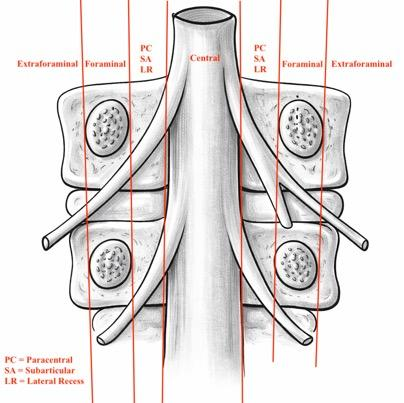
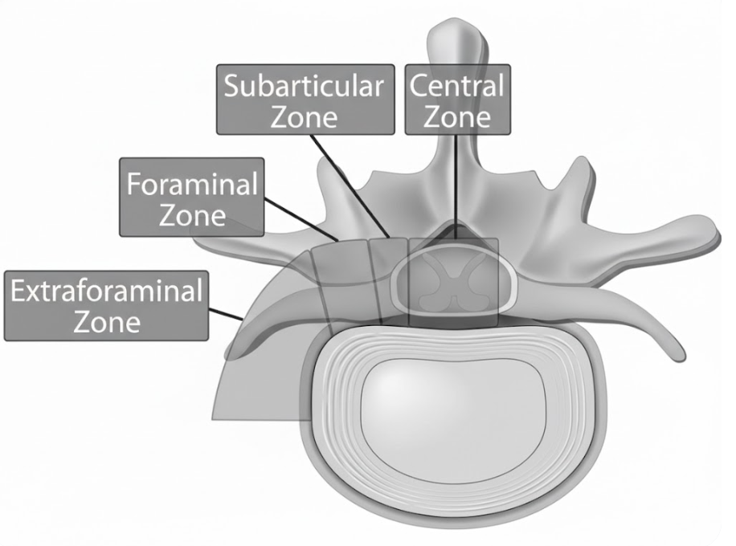
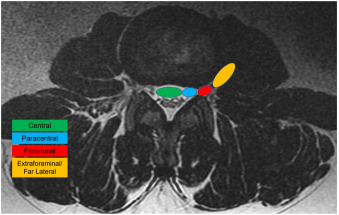

1) Description of Measurement and Brief Background
Lumbar disc herniations are classified by their axial (transverse) location relative to defined anatomical zones within and around the spinal canal. This zone-based classification system, standardized by the combined task forces of the North American Spine Society (NASS), the American Society of Spine Radiology (ASSR), and the American Society of Neuroradiology (ASNR) in the Lumbar Disc Nomenclature Version 2.0 (Fardon et al. 2014), is essential for determining which nerve root is affected and for guiding surgical approach selection.
The four primary axial zones are: central, paracentral (subarticular / lateral recess), foraminal, and extraforaminal (far lateral). Each zone is defined by bony and soft tissue landmarks visible on MRI, and each has a distinct pattern of nerve root involvement. The distinction between zones is critical because, in most cases, paracentral herniations compress the traversing nerve root while foraminal and extraforaminal herniations compress the exiting nerve root at the same disc level.

(Sahil made this image with ChatGpt and light editing on computer, should not have copyright issues)


While the vast majority of disc herniations are central or paracentral (and within the spinal canal), the aspiring or practicing surgeon should be aware that foraminal and extraforaminal herniations are estimated to comprise 7-12% of all symptomatic disc herniations. (Epstein N. 2002)
Despite their lower frequency, far lateral herniations are clinically important because they are they often compress the dorsal root ganglion (DRG) directly resulting in severe nociceptive signal activation. For those performing tubular, endoscopic, and minimally invasive techniques, proper identification is critical in the decision-making process for optimal approaches.
On MRI, use the following anatomical landmarks to define zone boundaries: (See coronal image above)
1) The medial border of the facet joints (separates central from paracentral/subarticular zones)
2) The medial and lateral borders of the pedicles (define the foraminal zone)
3) The lateral edge of the pedicle (defines the boundary between foraminal and extraforaminal zones)
2) Instructions to Identify Herniation Zone on MRI
General MRI Protocol:
• The most clinically utility in most settings will be derived from the T2-weighted sequence MRI imaging.
• Begin by critically evaluating the axial slice to gather an initial impression of the herniation. Ensure that the image slice is best parallel to the disc space at the level of interest.
◦ Axial slices must be angled parallel to the disc space (not to the vertebral body) to accurately assess disc morphology and zone localization
◦ Once initial categorization is complete, appreciate the compression of the elements within the various aforementioned regions and the correlation of clinical exam to this.
• Next review the sagittal images to identify the assess (1) craniocaudal migration and (2) course of the herniation, extruded fragments, or other pathology that may be visually appreciable. While there is no formal “best practice” the authors suggest starting with an exact midline sagittal slice and then tracking the “dimensionality” of a herniation as you move parasitically and further laterally in your review of imaging slices.
Zones and Borders:
Central
Location: Midline, within spinal canal (between medial facets) Root Typically Affected: Cauda equina risk or bilateral traversing roots (can be unilateral depending on size and 3d geometry)
Paracentral (Subarticular / Lateral Recess)
Location: Between lateral aspect of thecal sac and the border of the medial pedicle Root Typically Affected: Traversing root
Foraminal
Location: Between medial & lateral pedicle borders (within the neural foramen) Root Typically Affected: Exiting root +/- DRG
MRI Pearl - Carefully evaluate parasagittal and foraminal imaging slices.
Extraforaminal (Far Lateral)
Location: Everything lateral to the lateral border of the pedicle
Root Typically Affected: Exiting nerve +/- DRG
MRI Pearl - Carefully evaluate parasagittal and foraminal imaging slices.
4) Important References
Fardon DF, Williams AL, Dohring EJ, et al. Lumbar disc nomenclature: version 2.0: Recommendations of the combined task forces of the North American Spine Society, the American Society of Spine Radiology and the American Society of Neuroradiology. Spine J. 2014 Nov 1;14(11):2525-45. doi: 10.1016/j.spinee.2014.04.022.
Wiltse LL, Berger PE, McCulloch JA. A system for reporting the size and location of lesions in the spine. Spine (Phila Pa 1976). 1997 Jul 1;22(13):1534-7. doi: 10.1097/00007632-199707010-00021.
Bono CM, Schoenfeld AJ, Garfin SR. Lumbar disc herniations. In: Rothman-Simeone and Herkowitz’s The Spine. 7th ed. Elsevier; 2018. Chapter 46.
Choi JY, Lee WS, Sung KH. Extraforaminal with or without foraminal disk herniation: reliable MRI findings. AJR Am J Roentgenol. 2009 May;192(5):W212-8. doi: 10.2214/AJR.08.1035.
Defined G, Lofrese G, De Bonis P, et al. Far lateral lumbar disc herniation part 1: Imaging, neurophysiology and clinical features. World Neurosurg. 2022 Jan;157:237-247. doi: 10.1016/j.wneu.2021.10.102.
Costello R, Beall D. Nomenclature and standard reporting terminology of intervertebral disk herniation. Magn Reson Imaging Clin N Am. 2007 May;15(2):167-74. doi: 10.1016/j.mric.2006.12.001.
Humphreys SC, Eck JC. Clinical evaluation and treatment options for herniated lumbar disc. Am Fam Physician. 1999 Feb 1;59(3):575-82.
Epstein, N. Foraminal and far lateral lumbar disc herniations: surgical alternatives and outcome measures. Spinal Cord 40, 491–500 (2002). https://doi.org/10.1038/sj.sc.3101319